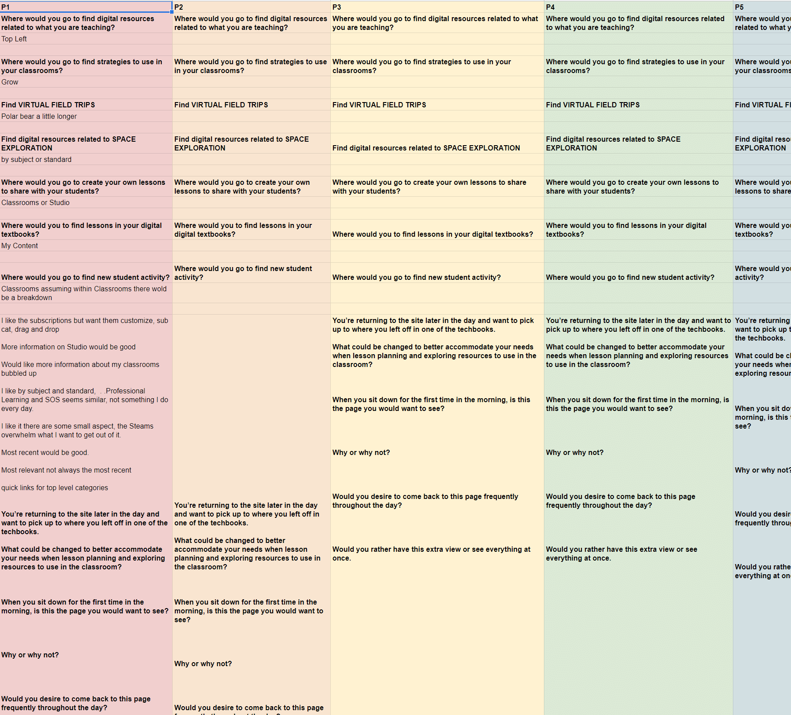
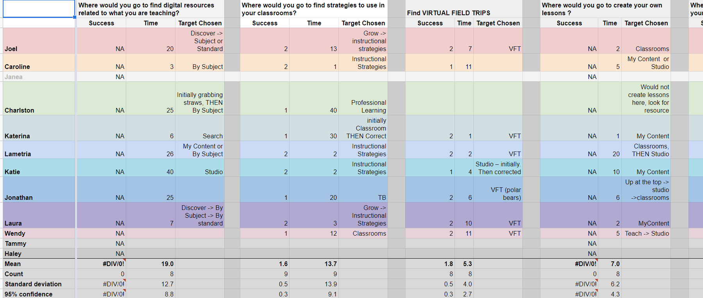
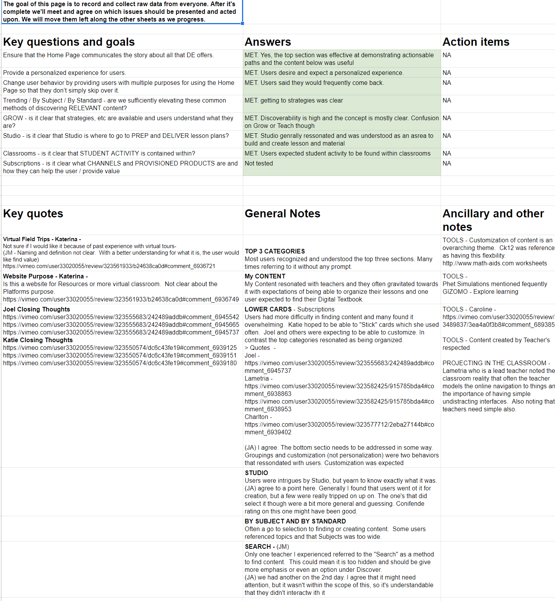
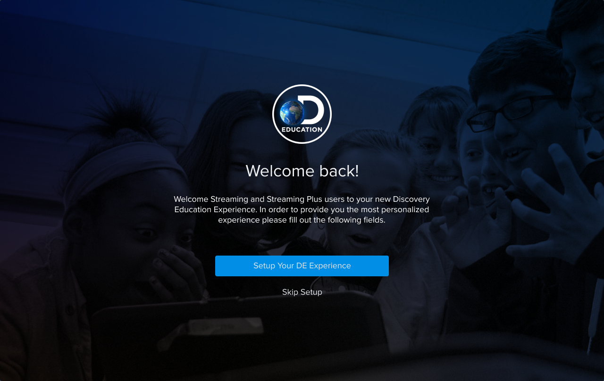

One of the big strengths of Discovery Education is the content which includes Discovery Channel
Disclaimer: Due to personally identifiable information (PII) and various privacy concerns, much of the content
has been adjusted, hidden, or removed completely.
Voice control. Try "navigate to [project name/nav entry/forward]"
What is Player?
Joy and Playfulness
When the drag and drop interactions were introduced we often found users playing with them on their free time or during research sessions when waiting. It was this little interaction that was similar to clicking the top of a pen. Just a little action that served as a way for users to find comfort and occupy time just because they enjoyed how it felt. In later interactions the drag and drop interaction was improved to raise and skew a little on rotation in order to create a more playful experience and stronger interaction affordance
User Testing Personalization
With the focus of the experience being so focused on personalization, an interest challenge had presented itself. How close to the real thing do we need to get when testing experiences? In the end it depending on the situation. If we were testing something specific to personalization we often had to create unique experience for each user which then impacted our organization and workflow system since we now had to account for versions like we hadn't done prior.
If we were testing a something that wasn't directly related to persoanlization then it woudl depend on how much the experience was influenced. We would leverage one of our personas that aligned with most teachers so that content would at least be within their subject and therefore still accurate enough to suspend a bit of disbelief.
My Responsibilities & Key Contributions
I was the User Experience Lead on
Working with the back-end, front-end, design, and user community teams, I made sure the experience expectations were managed within the organization, while also directing and monitoring the experience for users.
User Research Planning and Integration
I was in charge of planning and delegating through the project. After speaking with our U.K. team we teamed
up and leveraged research that they had done. They had also taken into account student designs more heavily
which we then turned into production ready designs after some review and refinement. Just as important as as
doing the research was collecting and digesting it in a usable manner so it could be integrated quickly.
Accessibility and Touch Compliance Specialist
Partnering with an excellent developer, we made sure all production designs were AA compliant, appropriate
for screen readers, and made sure we design around touch interfaces. We strive to allow every student the
ability to have the same experience as the next, regardless of situation. We're legally obligated to be AA
compliant, but that's a minimum and we believe our work should result in a higher quality of product.
Reduced Research Time and Increased Data
Working with another researcher we figured out new and creative ways to facilitate remote user research. We
cycle systems for interviews because we like to continue to leverage different tools and services for their
different strengths. If we needed a card sort, and the current active services didn't include that we needed
to plan accordingly and reallocate funds. Working with a budget, even if it was fair, and having restrictions
forced us to generate creative solutions if we wanted to stick to such an am bitious and active plan.
Introduced New and innovative Tools
Leveraging modern tools like Figma we were able to record full mouse movement when conducting usability tests.
Something that can be limiting when testing in the educational tech industry is lack of access to users
hardware due to security risks and reasons. Collaboration across designers, developers, and certain people
who just happen to bounce all over the place generating ideas all improved. Having to never sync and monitor a
file was an immeasurable improvement to our workflow.
Evaluating the Old Home Experience
The old home experience had serious usability and engagement issues. By gathering user feedback, analytics, and the current product suite and company transition, we were able to create a new landing experience for post-login users that increased engagement frequency and scope of products.
The first job to be done was obtaining any research and any analytics that existed. Using Google Analytics and a newly implemented tool called Pendo we were able to organize that while conducting usability and satisfaction research. Gathering usage data and funnels were very useful for the data itself and it also enabled us to identify any potential patterns to be aware of when running research sessions.
After years of tinkering and in the light of recent software developments, I've developed a very
cost-effective remote user research solution that we leveraged to get timely, digestable, and actionable data.
By having assumptions, analytics, and a general awareness of user concerns, it took less than a week to
facilitate and extract findings that were immediately integrated into prototypes and planing. Our primary
Methods included remote moderated and unmoderated usability testing, 1:1 interviews, and almost always surveys as follow-ups to
studies and as their own studies. This combination of generative and evaluative research was critical in
discovering and analyzing users' behavior, need, and motivations.



When evaluating the performance of the old home experience we needed two things: 1) we needed to know what
would save users time, and 2) we needed a set of goals that could guide the experience and metrics determined
to result in a successful product. The following were some of our high-level conclusions that were most
relevant to our goals.
Irrelevant Feed of Content
Social and activity feeds offers details that were too detailed and needed to be consolidated. Users were
also inundated with certain users and content due to a weak sorting and throttling algorithm.
Not Engaging and Lacked Customization
We found that users rarely strayed from certain areas of the site regardless of the content on their
homepage. At the same time, there wasn't any way for users to personalize their feeds other than district
settings.
Low Element Engagement
When we changed the hero experience engagement spiked and stuck, but overall, the experience below the hero
area, while also improved, was still performing at extremely low conversion rates.
Users using direct URLs and Bookmarks
Analytics showed that often users would use direct bookmarks to certain areas of the site which they found
most valuable. This resulted in Home being the least used page of product langins pages and also reduced
product diversity each user engaged with.
Research and Protoypes
Prototypes iterations were based off of both research and evaluation of the old homepage, and also had to take into account all of the new experiences and goals. As a result, instead of being fast short iterations, homepage consists of a longer, but less dense timeline staging the final release.
Instead of early quick revisions, the new homepage experience was done over time and changed as the experience itself changed. Home has a separate research track that rans in parallel with others since home was often the step prior to a user engaging with other parts of the site but we weren't finishing it until the rest of the site was done.
It was important to establish goals early on in the process and identify guiding principles for research and design so that research is more valuable and to avoid doing unnecessary research that wastes time and money. It's also important in regards to research because I was able to provide templates for each project that were consistent enough to be facilitated by anyone on the team. What this means is that we could have different people collecting, at different times but all returning relatively the same type of information. This enabled quicker synthesization and integration of research and opportunities that were out of scope were easier to identify and delegate.
Some of our findings revealed that by using larger cards with simple but relevant visuals provided a well-balanced and scannable experience. Cards were a familiar pattern throughout the new design system which created a recognizable experience as soon as the user logged in. Strong visuals, were important, but only in the short term. Long term researouch found that visuals, if done poorly, actually slow users down. It took a great effort by the content team to work with us in order to accomodate meaningful imagery that was an indication of content and not just a design element.
The New Discovery Education Home
The new experience set out to provide a solution that set out to accomodate all users by leveraging a personalization system, new layout based around teaching and learning modes, and a persistent navigation system that acted as a "mini" version of the homepage.
After months of research, testing, iterating, debate, and last-minute changes because someone noticed something what we arrived at was something that we can confidently say solves what the modern day classroom teacher desires with the Discovery Education Experience.
Accommodate a broad spectrum of educators through personalization
Allow users to add and remove content, reorder that content, and group it all in ways that make sense. Allow the users to own the space and really personalize in order to facilitate whichever learning mode they're in.
Simplify and unify the ‘base’ experience for all users
Abstract functionality one level to allow the user to choose their own path. Home and the global navigation should be the hub where teachers can switch modes and pivot on the type of work they're doing. This same base experience can be seen within the global navigation as well, where all 9 homepage functions are found.
Increase awareness and engagement with supporting experiences
By leveraging personalized home experience, we were able to promote high value content that users weren't aware of. This resulted in higher engagement with products along a larger scope as well. In addition, reported satisfaction and perceived lesson planning effectiveness went up as well on surveys.
Connect instruction to high-quality content
We wanted to connect users to the high-quality content they always speak about. Discovery Education is known for good content, and we wanted to increase awareness of not only big changes within Discovery Education content, but also changes to content the user is subscribed to or has already used. Keeping the homepage fresh, but also consistent will never stop being a challenge.
Save students and educators time and effort
We invested heavily in the fact that users have many modes and we won't be able to predict which mode they'll arrive in. Making sure that users were aware and had quick access to any path was imperative to us. Bouncing and pogo-sticking back to the home page like users used to do was unacceptable. With the integration of the global navigation, the home experience is with the users throughout. But only what they need, not the content. Just the ability to access the content.
Be extensible enough to be adapted internationally
DE is a global product and we take localization very seriously. We believe that every student and educator should have the same opportunities. With considerations for RTL languages, special character availability in typeface, cultural sensitivities and more everything from content to the interface goes through a litany of checks and use cases to make sure the experience is as uniform and accommodating as possible.
Onboarding and Personalization
We carefully empowered users to create and own their Discovery Education experience and collaborated with a number of teams to offer direct support through a number of channels.
Early on in our soft-launch timeline we identified that we were struggling to get users to complete the initial onboarding screen forms. In order for users to have the best experience, and have the most relevant content served to them, we needed to know more about each user. We also want to remind users about settings they might have forgotten about and enable them to make any adjustments to make the most out of the transition to a new product.
What started out as a three screen experience ended up being just one page with the plan to replace it all together for a much leaner and less intrusive experience. Initially the intentions were good; allow users the ability the refresh and set up their profiles. Due to a number of reasons we explored with users, the immediate value just wasn't communicated or implemented well enough.
Iterative Improvement
The initial prototype called for three on-boarding screens. With less than stellar performance we reduced the experience to two screens and immediately noticed an improvement

With performance still below where we wanted it to be we again reduced the flow to a single screen, and again, noticed an improvement. We saw an especially large increase in mobile users making selections. We found out that it was easier to see that there was an additional content and as a result users were more likely to scroll.
Eventually we concluded that we will remove the experience and direct the user to their profile instead also supported the fact that we could adjust the onboarding to assist in other areas in addition to be a less intrusive experience overall.
Battling Prior Mental Models
One of the key reasons teachers were skipping the screens was because of the unawareness of an experience they were already used to changing. This was different than something new. users already had mental models and assumptions about their profile and the options they selected. They weren't used to them doing much and continued to assume the same thing.
Minimize Interruption
A critical issue we dealt with was trying to reach teachers and users prior to using the experience. We wanted to establish a voice with users to speak to them and explain exactly why we're asking for their time. The last thing a teacher needs is an additional interruption, never mind one that result in an entire experience change. The less prepared and exposed a teacher was, the increased likelihood that they would skip the onboarding experience.
Unique Challenges
Similar Provisioned Products
The product suite for Discovery Education is large enough, but the number of provisioned product and services that districts and users can purchase plus the combinations they make are almost endless. This also results in certain products look very similar to other products and sub-products.
Prior to this new experience, products were usually recognized by the text alone. Now, with the design system set on a more engaging experience, we needed to create system solutions that weren't in place before. We need to work with the content team to obtain and generate images for each product. This required a whole new sub-project for the team to focus and delegate time towards but in the end resulted in an experience that was much more scannable and easier to understand.
Not interrupting class time
Reducing the number of screens and effort required to engage with the experience for the first time wasn't just to increase conversions. One of the more consistent pieces of feedback we received was about class interruption for students and teachers. Even when expecting it, users generally were only signed in during times they had a task to complete or something to do. Generally, they were signed in to do something and any stopping that is seen as an interruption
By reducing the on-boarding experience and working with the Marketing and Community teams much more proactively, we were able to reduce friction, increase engagement with the profile customization, and increase general satisfaction ratings.
Providing contextual support
One of the major improvements with the new experience was our new in-product messaging, support, and analytics system. We established three goals we needed to accomodate for when exploring solutions. It had to be accessible, contextual, and explorable. The user had to be able to easily access help at any time in the experience. The help they access should be contextual and present information about the current experience initially. Research has shown that users tend to want specific support related to what they're current ask is over general support. And lastly, if the user wasn't able to find a solution, they should have other options such as related content or a way to directly reach out for support.
Customization, Personalization, and Security Infrastructure
Figuring out how we would leverage user data to create better experiences require thorough planning that would influence the entire data schema of each person's profile. We had to account for what was currently available, what we would be collecting, what we COULD be collecting in the distant future, technology limitations, optimizations, and especially security. Security was an additional challenge because all times we were required to abstract an anonymize each user's information. When we wanted to access a user's information, we had to go through additional steps to identify them while retaining anonymity.
Interesting findings
Personalization is assumed
A common theme we encountered during research was the fact that most users assumed personalization and customization. Time and time again, when testing experiences, teachers had assumptions about how the experience would be personalized for them.
It wasn't just that users wanted personalization, they assumed and expected it. The fact that this was such a widely observed theme, this quickly elevated certain features and experiences that were relevant to personalization and customization.
Joy and Playfulness
When the drag and drop interactions were introduced we often found users playing with them on their free time or during research sessions when waiting. It was this little interaction that was similar to clicking the top of a pen. Just a little action that served as a way for users to find comfort and occupy time just because they enjoyed how it felt. In later interactions the drag and drop interaction was improved to raise and skew a little on rotation in order to create a more playful experience and stronger interaction affordance
User Testing Personalization
With the focus of the experience being so focused on personalization, an interest challenge had presented itself. How close to the real thing do we need to get when testing experiences? In the end it depending on the situation. If we were testing something specific to personalization we often had to create unique experience for each user which then impacted our organization and workflow system since we now had to account for versions like we hadn't done prior.
If we were testing a something that wasn't directly related to persoanlization then it woudl depend on how much the experience was influenced. We would leverage one of our personas that aligned with most teachers so that content would at least be within their subject and therefore still accurate enough to suspend a bit of disbelief.